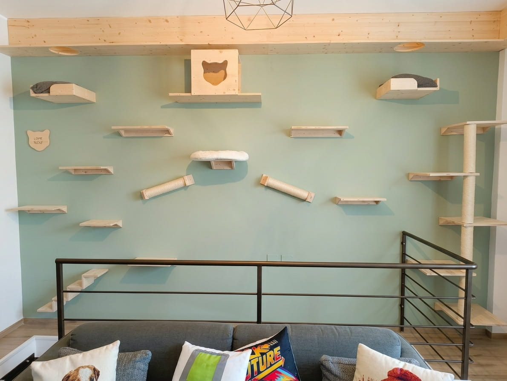
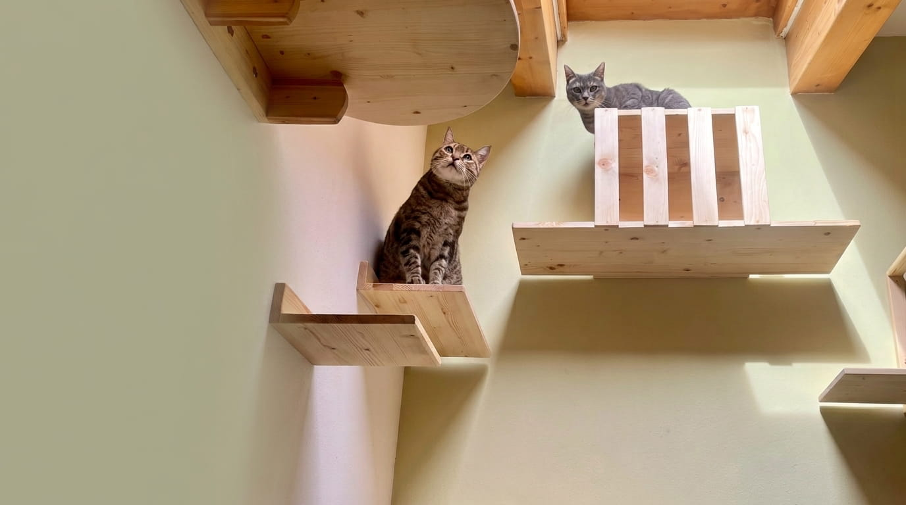
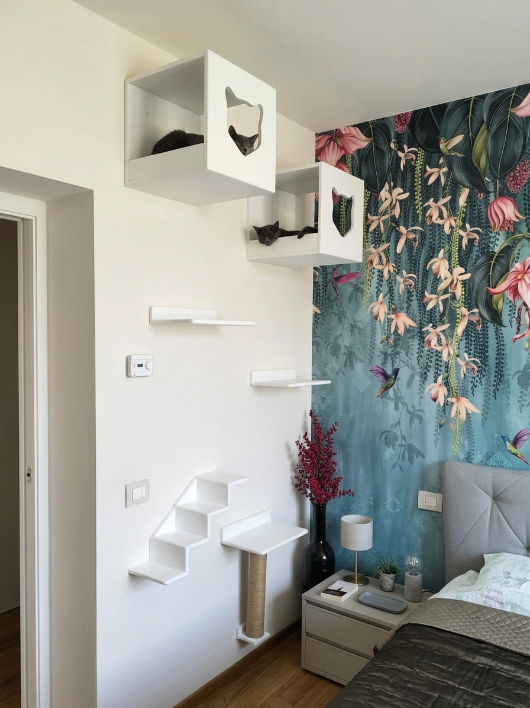
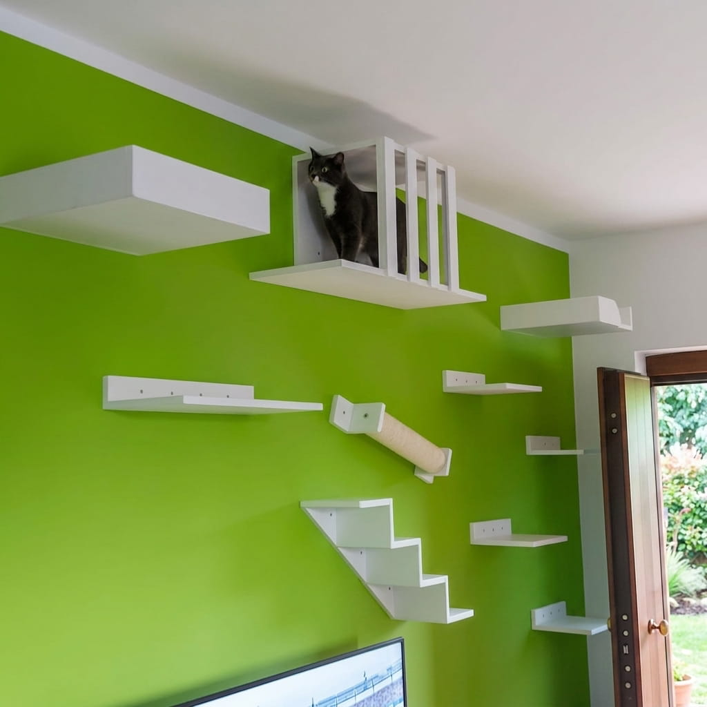
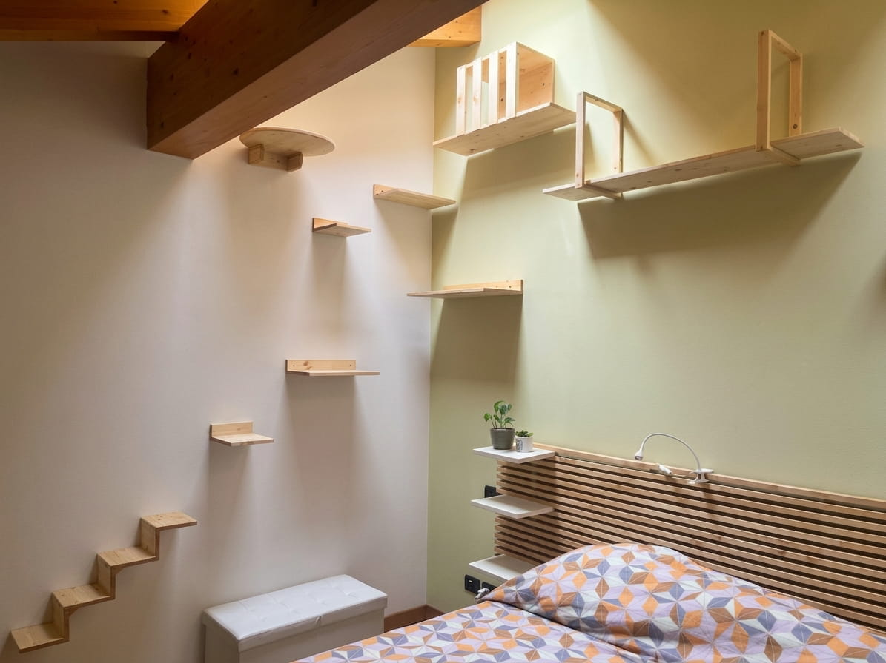

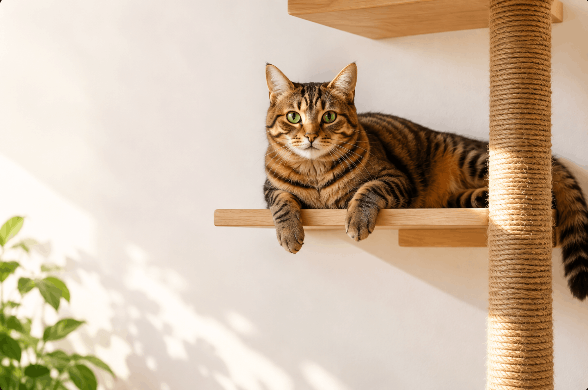
PROGETTIAMO AMBIENTI PER GATTI SU MISURA
Più spazio, movimento e libertà per il tuo gatto, senza rinunciare all'armonia della tua casa.
Percorsi, tiragraffi e soluzioni in legno progettate sulle abitudini del tuo gatto.
Raccontaci il progetto del tuo gatto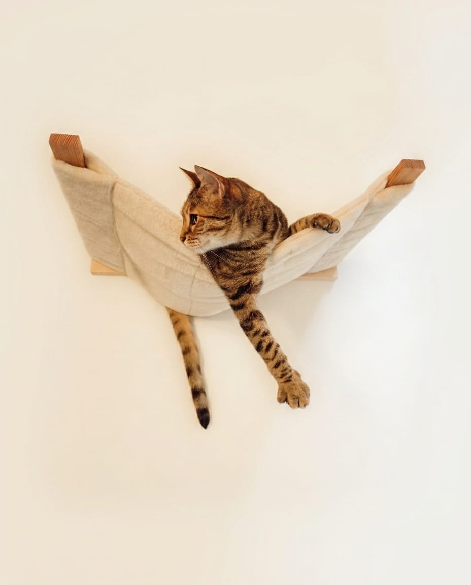
IL NOSTRO PUNTO DI PARTENZA
Non basta aggiungere un tiragraffi o qualche mensola alla parete.
Valutiamo come il gatto si muove, dove cerca riparo, quali zone utilizza già e cosa può funzionare nella tua casa.
Solo dopo definiamo la struttura.
Ogni progetto nasce dall'ascolto del gatto, dello spazio e delle esigenze della famiglia.
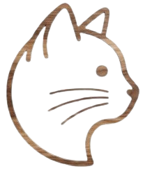
Ogni gatto ha caratteristiche e abitudini diverse. Partiamo da lui per capire cosa può renderlo più libero, curioso e sereno.
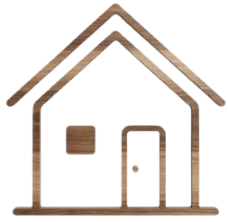
Analizziamo ambiente, dimensioni e stile della casa per creare una soluzione che si integri naturalmente negli spazi già vissuti.
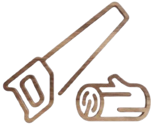
Dall'idea iniziale alla lavorazione del legno, seguiamo ogni fase per creare un elemento unico, costruito intorno al gatto e alla tua casa.
IL VALORE DEL SU MISURA
Ogni gatto e ogni casa hanno esigenze diverse. Per questo creiamo soluzioni progettate intorno allo spazio, alle abitudini e alla vita quotidiana del gatto.
Dall'idea iniziale alla scelta dei materiali, seguiamo ogni fase per realizzare un progetto unico.
Soluzioni realizzate su misura per gatti e case diverse.
Scorri per vedere tutti i progetti →





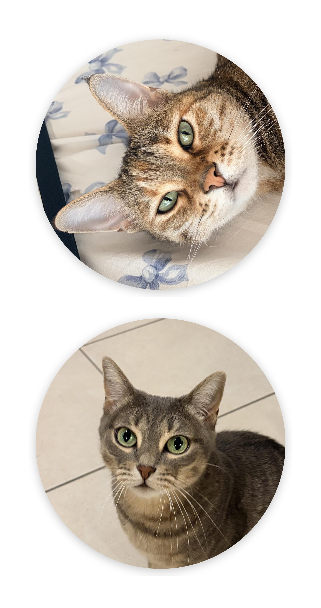
L’Angolo dei Gatti nasce dall’esperienza con le nostre gatte e dalla volontà di creare spazi pensati sulle esigenze di ogni gatto.
Ogni progetto nasce dall’ascolto, dallo spazio disponibile e dalle abitudini del gatto che lo vivrà.
Scopri la nostra storiaLe esperienze delle famiglie che hanno scelto di creare un nuovo spazio per il proprio gatto.
"Prodotti di qualità e gentilezza ♥️ Una parte del mio percorso nella pensione per gatti è fatta da loro. La qualità è top e loro sono persone molto attente e gentili. Penso di ampliare l’arredamento della pensione solo con i loro prodotti. Sono aperti alle idee nuove e creative, proprio quello che cercavo!"
"Salvatore e Anna sono fantastici, ci mettono proprio il cuore nel loro lavoro. Ogni minimo dettaglio non viene lasciato al caso, ti danno tante possibilità sia di materiali che di dimensioni. Sono rimasta davvero soddisfatta. Consigliatissimi, sia come lavoro che come persone."
"Ho ordinato un percorso in verticale per i miei tre gatti che attraversa tutto il soggiorno. Salvatore ha dato vita ad un progetto che avevo in mente da tempo, ascoltando ogni mia necessità. Lavoro realizzato su misura con legno di ottima qualità e cura di ogni minimo dettaglio."
Raccontaci lo spazio che hai a disposizione e cosa vorresti creare insieme.
Contattaci